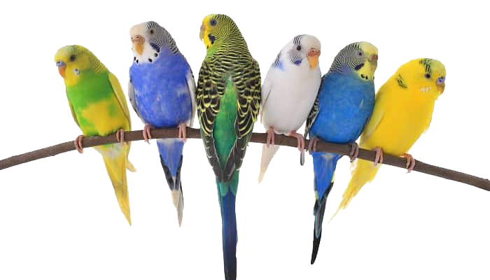

Periquitos Australianos

Datos de los Periquitos Australianos.
- Son fáciles de domesticar y pueden llegar a adquirir la capacidad de hablar o silbar melodías.
- La mejor alimentación es el alpiste, verduras y frutas.
- No se les puede dar aguacate, papas, perejil y chocolate.
- Para aparearse es indispensable ponerles un tronco.
- Los machos tienen la cera del pico, de color azul o rosado.
- Las hembras tienen la cera del pico de color marrón o un blanco-azul.
- Cuando son perícos jóvenes los ojos son de un color muy oscuro, a medida que crecen y envejecen, aparece un disco blanco en torno a la pupila
- El tiempo de incubación de los huevos de un periquito es de unos 18 días.
- Cuando una hembra se queda sola, hay que ponerle un macho, a diferencia de si es un macho, no importa el sexo del periquito que se le ponga al lado para que se le pase la melancolía.
- Las crías nacen sin plumas y son poco mas grandes que un garbanzo.